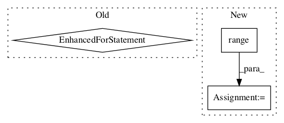

b71152eea0470ac2629c33e0fc66a54fe494949f,baselines/common/vec_env/dummy_vec_env.py,DummyVecEnv,step_wait,#DummyVecEnv#,15

Before Change
results = [env.step(a) for (a,env) in zip(self.actions, self.envs)]
obs, rews, dones, infos = map(np.array, zip(*results))
self.ts += 1
for (i, done) in enumerate(dones):
if done:
obs[i] = self.envs[i].reset()
self.ts[i] = 0
self.actions = None
return np.array(obs), np.array(rews), np.array(dones), infos
def reset(self):
After Change
self.actions = actions
def step_wait(self):
for i in range(self.num_envs):
obs_tuple, self.buf_rews[i], self.buf_dones[i], self.buf_infos[i] = self.envs[i].step(self.actions[i])
if isinstance(obs_tuple, (tuple, list)):
for t,x in enumerate(obs_tuple):
self.buf_obs[t][i] = x
else:
self.buf_obs[0][i] = obs_tuple
return self.buf_obs, self.buf_rews, self.buf_dones, self.buf_infos
def reset(self):
for i in range(self.num_envs):
In pattern: SUPERPATTERN
Frequency: 4
Non-data size: 3
Instances
Project Name: openai/baselines
Commit Name: b71152eea0470ac2629c33e0fc66a54fe494949f
Time:
Author: null
File Name: baselines/common/vec_env/dummy_vec_env.py
Class Name: DummyVecEnv
Method Name: step_wait
Project Name: deepchem/deepchem
Commit Name: 1330ea3102315bd79c9c6efdbd8818c8e2a3cb8f
Time:
Author: null
File Name: deepchem/metalearning/maml.py
Class Name: MAML
Method Name: fit
Project Name: deepchem/deepchem
Commit Name: b68db1aaf6abe4d2cea8321cc6f1564228dd60f5
Time:
Author: null
File Name: deepchem/models/keras_model.py
Class Name: KerasModel
Method Name: _predict
Project Name: MorvanZhou/Reinforcement-learning-with-tensorflow
Commit Name: 1a292afa66250814e3fa3fab26e4f7e5140baf31
Time:
Author: null
File Name: contents/12_Proximal_Policy_Optimization/simply_PPO.py
Class Name: PPO
Method Name: update